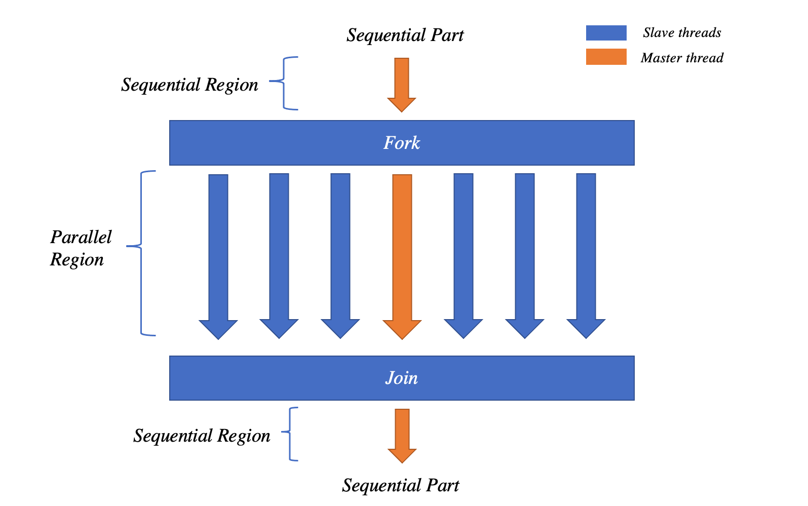

OpenMP Crash Course¶
OpenMP(Open Multi-Processing) 是一个应用程序编程接口（API），OpenMP使用 线程（threads） 和 任务（tasks） 的概念，它支持在各不同的平台、指令集架构和操作系统（包括Solaris、 AIX、FreeBSD、HP-UX、Linux、macOS和Windows）上针对C，C++和Fortran的一组拓展，进行多平台共享内存的多进程编程。
它由一组编译器指令 （compiler directives）、库存程序（Runtime library routines）和影响运行时间的环境变量（environment variables）组成。
发展历程¶
一直以来，共享内存指令（shared memory directives）在计算机历史上缺乏标准化。每个硬件供应商提供不同的API，并且主要是基于指令的 （directive-based）、为Fortran语言设计开发的API，这对于写可移植代码而言十分困难。
因此，Digital, IBM, Intel, KAI和SGI成立了 OpenMP论坛 ，现在该论坛包括大多数主要的供应商。
History¶
1997年10月，OpenMP体系结构审查委员会（OpenMP Archtiecture Review Board, ARB）发布了其第一个API规范，即Fortran 1.0版本的OpenMP，并于1999年11月进行了轻微修订（1.1版本），在2000年11月进行主要修订（2.0版本）。
1998年10月，C/C++标准发布，并于2002年3月发布了2.0版本。
2005年，发布了C/C++/Fortran的组合规范。
没有新的功能，但是有大量的重写和申明（clarification）。
2008年5月，3.0版本发布
新功能发布，包括任务（tasks），更好的支持循环并行和嵌套并行。
2011年6月，3.1版本发布
修正及一些小的新功能
大多数目前的编译器都支持该版本
2013年7月，4.0版本发布
加速器卸载，线程分区，更多任务的支持
在大多数实施中使用
2015年，4.5版本发布
修正以及一些新功能
还没有完整的实现？
基本概念¶
Thread Programming¶
共享内存的编程模型是基于线程（thread）这一基本概念，线程与进程（processes）类似，不同之处在于线程可以彼此共享内存(以及拥有私有内存)。
所有的线程都可以访问共享数据，但是私有数据只能被所属的线程访问。通过同一个程序，不同的线程可以遵循不同的控制流（flows），并且每个线程都有自己的程序计数器（program counter）。通常情况下一个CPU/核运行一个线程，但是有的情况下可能运行多个线程，比如一些硬件能够支持单核多线程，即 simultaneous multi-threading 或 hyper-threading(Intel专属)。
线程的应用¶
线程之间必须能够交换数据以便能够进行有用的并行程序，线程之间也可以通过读写共享数据进行通讯。 例如，线程1向共享变量a写入一个值，线程2可以从共享变量a中读取这个值。注意：在线程编程模型中没有消息（message）这一概念。
Tasks¶
一项任务(task)是可以独立于其他任务而执行的计算。原则上，可以创建一个新的线程来执行每个任务。然而，在实践中这一操作成本高昂，尤其是有大量的小任务时。
相反，任务可以通过预先存在的线程池（pool）所执行：
向池中提交任务
池中的某个线程执行该任务
确保该任务在未来的某个时刻能够完成
通过任务，可以将我们的计算与正在执行的实际线程分离和分解。
并行计算的基本逻辑¶
Directives and Sentinels¶
一个指令（directive）是指一行特殊的，只针对某些编译器有意义的源代码，通常在行首由标记（sentinel）来区分。
对于OpenMP而言，其特殊标记为：
Fortran:
!$OMPC/C++:
#pragma omp
Parallel regions¶
并行区域（parallel region）是OpenMP中的基本并行结构，定义了程序的一部分。
程序开始时，在一个单独的线程（主线程，即master thread）上开始执行。当遇到第一个并行区域时，主线程创建一个线程组（ fork-join 模型）。每个线程执行并行区域内的命令，在并行区域结束后，主线程等待其他线程结束后，继续执行下一个命令。
Fork-join模型图示¶
共享和私有参数¶
在并行区域内，变量是可以共享（shared）的，也可以是私有（private）的。所有线程都能看到共享变量的相同副本，并可以读写共享变量。
每个线程都有自己的私有变量副本，但是这些副本对于其他线程而言是不可见的。私有变量只能被自己的线程读写。
在并行区域内，变量可以被共享（所有线程有相同的副本）或者私有（每个线程有自己的副本）：
//共有条款
shared(list)
//私有条款
private(list)
//默认条款
default(shared|none)
进入并行区域时，私有变量并未初始化，在并行区域内声明的变量自动成为私有变量。在并行区域结束后，私有副本的任何更改都不会影响到原始变量。
小心
不使用 DEFAULT 与指定 DEFAULT(SHARED) 相同, 总是使用 DEFAULT(NONE)
具体示例¶
Parallel loops¶
循环是许多应用程序中进行并行的主要来源，OpenMP对并行循环提供了广泛的支持。如果一个循环的迭代是独立的（可以以任何顺序完成），那么可以在不同的线程中共享迭代，可以将一个迭代或一组迭代看成一个任务。
Example¶
#include <numeric>
#include <vector>
int main()
{
std::vector<double> a(100);
std::vector<double> b(100);
// create vector a, b ranging from 1 to 100
std::iota(a.begin(), a.end(), 1);
std::iota(b.begin(), b.end(), 1);
// add together the elements of two vectors
#pragma omp parallel for default(none)\
shared(a, b)
for (int i = 0; i<100; i ++){
a[i] += b[i];
}
}
Reductions¶
降维（reduction）从加、乘、最大值、最小值、和、或等关联操作中产生一个值。在降维中，每个线程可以积累自己的私有副本，然后这些副本被降维以得到最终结果。如果操作的数量远远大于线程的数量，那么大多数操作可以在并行中进行。
Example¶
#include <numeric>
#include <vector>
int main()
{
// create vector a ranging from 1 to 100
std::vector<double> a(100);
std::iota(a.begin(), a.end(), 1);
double b = 0;
#pragma omp parallel for default(none)\
shared(a)\
reduction(+: b)
for (int i = 0; i<100; i ++){
b += a[i];
}
}